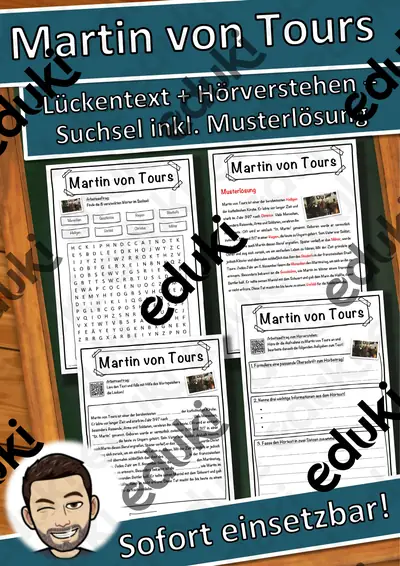

Lesespaziergang DaZ: Sankt Martin – Wortschatz mit Rätseln, 3-fach differenziert (Klasse 1–4)

Materialpaket Feste im Winter für die 2. Klasse: 6 Lesespurgeschichten mit Rätselaufgaben (Sankt Martin, Nikolaus, Advent, Weihnachten & Silvester)

Lesekartei St. Martin – 32 Kinderfragen mit Antworten in 3 Stufen (Klasse 2–4)

St.-Martins-Laterne aus einem Blatt – falten, einschneiden, rollen, mit Martinsgeschichte, 3-fach differenziert (Klasse 2/3)

Fensterlaterne Sankt Martin – Laterne basteln mit Lesetext zur Legende, 3-fach differenziert (Klasse 1–3)

Materialpaket Herbst-Lesespuren für die 3. Klasse: 7 Lesespurgeschichten mit Rätselaufgaben (Kürbis, Igel, Laterne, Halloween & mehr)

Lichterfeste in den Religionen – Diwali, Chanukka, Martinstag, Advent – Lesespurgeschichte mit Rätselaufgaben (Klasse 6)

Das Martinsfeuer – was ein Feuer braucht und wie man es löscht – Lesespurgeschichte mit Rätselaufgaben (Klasse 8)

Sankt Martin – vom Teilen und Helfen – Lesespurgeschichte mit Rätselaufgaben (Klasse 2)

Das Laternenfest – Lesespurgeschichte mit Rätselaufgaben (Klasse 3)
